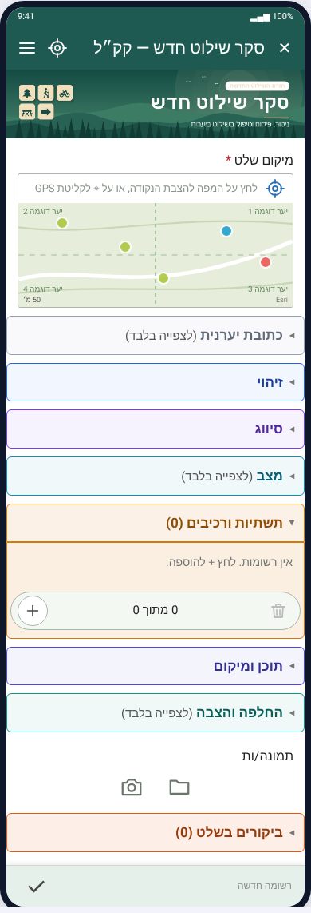
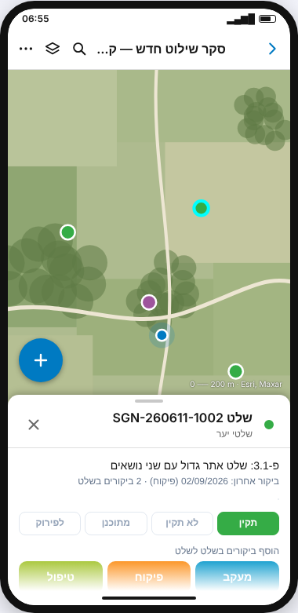
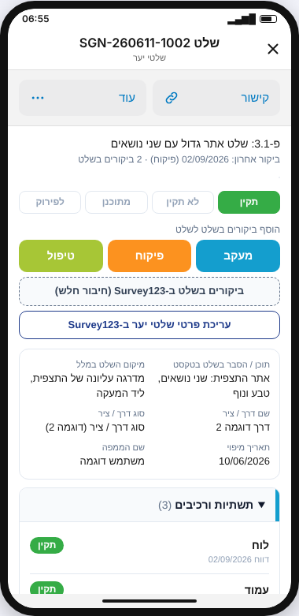

מדריך למשתמש: סקר שילוט ביערות קק״ל
איך להוסיף שלט חדש, לעדכן שלט קיים ולדווח על ביקור, באמצעות Survey123 ו-Field Maps.
צילומי המסך במדריך לקוחים מסימולטור של הטופס, ולכן פרטים קטנים באפליקציה עצמה עשויים להיראות מעט אחרת.
1. לפני שמתחילים
- מתקינים את האפליקציות Field Maps ו-Survey123 מחנות האפליקציות, ונכנסים בשתיהן עם אותו משתמש של הארגון.
- עבודה מול המפה והשלטים הקיימים נעשית ב-Field Maps. הוספת שלט חדש ועדכון פרטי שלט נעשים בטופס של Survey123, שנפתח מתוך Field Maps.
- מומלץ להפעיל מיקום (GPS) בטלפון, ולוודא שיש חיבור לרשת לפני היציאה לשטח כדי לטעון את המפה.
2. הוספת שלט חדש

- פותחים את הסקר ב-Survey123 ולוחצים על איסוף.
- מיקום שלט: מציבים את הנקודה על המפה, או לוחצים על סמל ה-⌖ כדי לקלוט את המיקום מה-GPS. השדות של הכתובת היערנית (מרחב, אזור, גוש, יער ועוד) מתמלאים אוטומטית לפי המיקום, ואין צורך לגעת בהם.
- פותחים כל קבוצה (זיהוי, סיווג, מצב) וממלאים. שדות חובה מסומנים ב-*.
- בקבוצת סיווג בוחרים משפחת דגם ודגם שלט. אם יש לדגם תת-דגם אחד בלבד, הוא נבחר לבד.
- תשתיות ורכיבים: מוסיפים רכיב בכל שורה (סוג רכיב, מספר כנף, כיוון ורמה לפי הצורך). רשימת הרכיבים מוצגת לפי הדגם שנבחר, כך שרכיב שלא מתאים לדגם אינו מופיע. בלחיצה על + מוסיפים רכיב נוסף. מתחת לרשימה מוצגת טבלה שמסכמת את הרכיבים שנרשמו.
- ממלאים את תוכן ומיקום ואת החלפה והצבה, ומצרפים תמונה אם צריך.
בכותרת הקבוצה מופיע מספר הרשומות, למשל "תשתיות ורכיבים (3)". הקבוצה ביקורים בשלט נפתחת ריקה. בשלט חדש אין צורך להוסיף ביקור, ואם רוצים לתעד ביקור מוסיפים אותו בלחיצה על +.
שליחה
לוחצים על ✓ בתחתית המסך ובוחרים: שלח עכשיו, שמור בדואר יוצא (לשליחה כשיש קליטה) או שמור בטיוטות (להמשך מילוי). אם חסר שדה חובה, האפליקציה מציגה כמה שדות חסרים ומעבירה אליהם.
3. עדכון שלט קיים


- ב-Field Maps מתקרבים למפה ולוחצים על השלט הרצוי. בתחתית המסך נפתח כרטיס עם מזהה השלט, הדגם והביקור האחרון.
- בפופאפ מוצגים פרטי השלט, מצב השלט, הרכיבים והביקורים האחרונים.
- לוחצים על עריכת פרטי שלט יער ב-Survey123. הטופס של אותו שלט נפתח עם הנתונים הקיימים.
- מתקנים את מה שצריך, ולוחצים על ✓ ושלח עכשיו. בסיום חוזרים אוטומטית ל-Field Maps והנתון המעודכן מוצג במפה.
שדות שאין לשנות בעריכה (למשל הכתובת היערנית) מוצגים לקריאה בלבד.
4. דיווח על ביקור (מעקב, פיקוח, טיפול)
- בוחרים את השלט במפה ופותחים את הפופאפ.
- ב"הוסף ביקור בשלט לשלט" לוחצים על סוג הביקור: מעקב, פיקוח או טיפול.
- ממלאים את טופס הביקור: תאריך (מתמלא לבד), מצב השלט בביקור וסיכום. אם נמצא ליקוי, מציינים אותו.
- אם צריך לדווח על רכיב ספציפי, לוחצים + ליד הרכיב בפופאפ ומציינים את מצבו בביקור.
- שומרים. הכרטיס של הביקור מופיע בפופאפ של השלט.
כשהקליטה חלשה אפשר להשתמש בכפתור ביקורים בשלט ב-Survey123 (חיבור חלש), שפותח את אותו דיווח בטופס Survey123, ושם אפשר לשמור בדואר יוצא ולשלוח כשתהיה רשת.
5. עבודה בלי קליטה
- טופס שנשמר ב-דואר יוצא נשלח כשיש רשת. נכנסים לדואר יוצא במסך הראשי של Survey123 ושולחים.
- טיוטות נשמרות במכשיר להמשך מילוי, ולא נשלחות עד שמסיימים.
- כדי שהמפה תהיה זמינה בשטח, מורידים אותה מראש לשימוש ללא חיבור, בהגדרות המפה ב-Field Maps.
6. בעיות נפוצות
- לא מצליח לשלוח, חסר שדה חובה: פותחים את הקבוצות ומחפשים שדה מסומן ב-* שנשאר ריק.
- הרכיב שאני מחפש לא מופיע ברשימה: הרשימה מסוננת לפי דגם השלט. בודקים שהדגם נבחר נכון.
- מספר כנף כפול: מופיעה התראה כשמספר הכנף חוזר באותו שלט. מתקנים את המספר.
- הנקודה במפה לא במקום הנכון: מזיזים את הנקודה בטופס, או ממתינים ל-GPS מדויק יותר לפני הקליטה.
- אינני רואה את השלט במפה: בודקים חיבור לרשת ומרעננים את המפה.